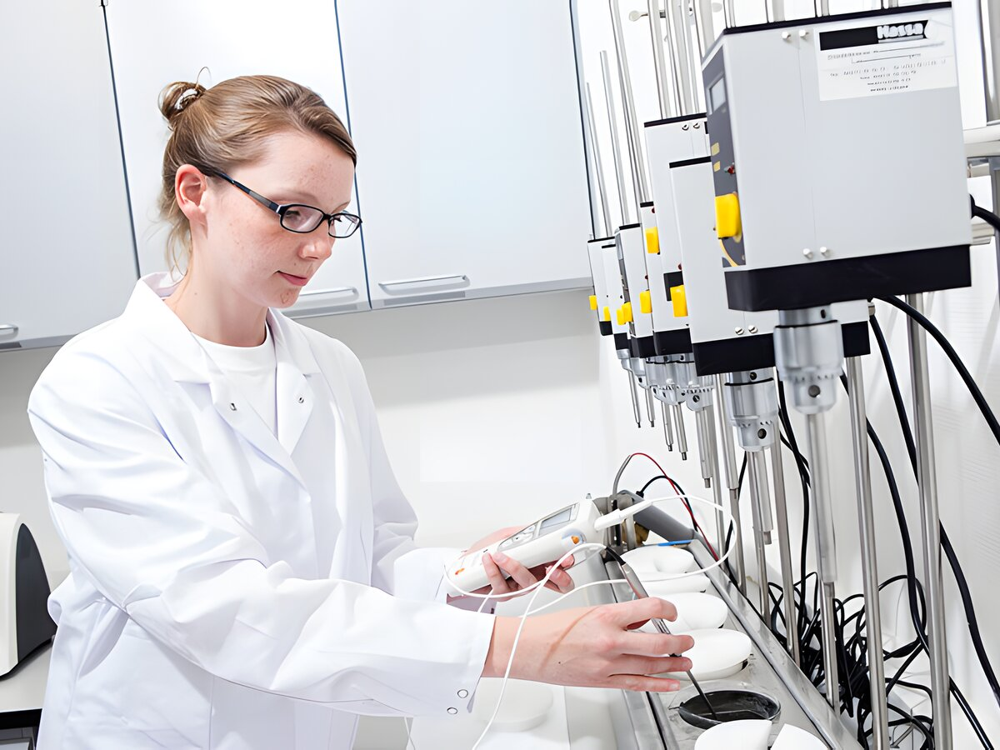

24 February 2022
KaTech receives rare BRC Food AA rating for food safety
The company's commitment to food safety management is rewarded with an AA rating for BRC Food certification according to version 8.
Lübeck and Reinfeld, 8th May 2019: Food technology company KaTech Katharina Hahn + Partner GmbH receives the rare BRC Food AA classification for the first time in its own history, after securing A-Grading for the 6th consecutive time. At the same time and yet again for the 7th year running, a "Higher Level" result was also achieved in the parallel IFS Food Audit. Such remarkable certification levels demonstrate professional competence and an uncompromising commitment to the highest possible food safety standards at KaTech.
Since the launch of the company in 2011, food safety management has been its focal point, consistently securing high-grade ratings in all certification audits. Despite significant business growth and increased staff numbers, high levels of excellence have not only been retained but also improved thanks to joint team efforts across the company. These outstanding results are clear testament to the embedded quality culture permeating every business process at KaTech.
Recent food scandals such as fipronil, dioxin, salmonella and listeria have invariably shaken consumer confidence in the food industry. Consequently, safety and transparency in the food sector has become a growing concern and throughout all stages of food production, companies operating in this sector must now meet exacting quality requirements. This requirement naturally includes food stabiliser supply companies, such as KaTech.
"We know how important food safety is for consumers and therefore also for our customers, the food manufacturers. External certifications give them confidence in our products, which we continue to confirm every day through our services and deliveries" says Cyril Carrat, Technical Director at KaTech, before further stating "we are continuously working to guide the ever-increasing and complex global requirements through optimal processes, and are extremely proud that this commitment has been recognised by the auditors and rewarded with an AA assessment and Higher Level result respectively."
About KaTech Katharina Hahn + Partner GmbH
KaTech Katharina Hahn + Partner is a food technology company whose business is the design, manufacture and delivery of tailor-made food stabilising solutions to the international food industry. The German-based business with subsidiaries in the UK and Poland specialises in plant based and savoury foods, all dairy products and sweet bakery.
For more information, please get in contact with:
More news